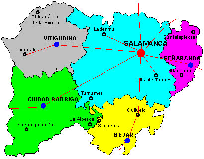
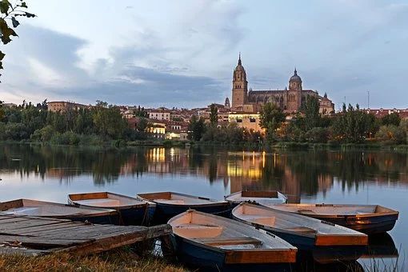

PROVINCIASAVILABURGOS LEON PALENCIA SEGOVIA SORIA VALLADOLID ZAMORA ENLACES EXTERNOS VOLVER AL INCIO |
SALAMANCAÍNDICE
1. LOCALIZACIÓNSalamanca se encuentra al suroeste de la comunidad 2. LOCALIDADES PRINCIPALESPrincipales ciudades: Grandes ciudades : Salamanca, Santa Marta de Tormes, Béjar, Ciudad Rodrigo, Villamayor y Carbajosa de la Sagrada Ubicacion de Salamanca capital: 3. GEOGRAFÍA DE LA PROVINCIACoordenadas geograficas:Latitud: 40.965, Longitud: -5.66305, 40° 57′ 54″ Norte, 5° 39′ 47″ Oeste Superficie: 3.934 hectáreas, 39,34 km² Altitud: 804 Clima: mediterraneo Tiempo actual de Salamanca: 4. HISTORIAEl origen de la ciudad es un pequeño asentamiento, en la primera edad del hierro, hace ya 2700 años. Una pequeña tribu vivía en la zona del cerro de San Vicente, junto al río Tormes. El año 220 a.C. el General del ejército cartaginense Aníbal conquista la tribu a su paso por la conquista de Hispania. Por entonces la zona era llamada Helmántica. Tras ésto, los romanos le arrebataron la zona a los cartaginenses, cambiando el nombre a la ciudad y llamándola Salmantica. Entonces empezó a cobrar importancia la ciudad por estar en la vía de la Plata que se comunicaba, Mérida, capital de la península ibérica, con las provincias del norte. Tras la caída de Roma pasaron por la ciudad por visigodos y musulmanes, que la conquistaron en el año 712. La ciudad quedó prácticamente vacía en su época musulmana al ser una zona fronteriza entre el territorio cristiano y musulmán. Pero la reconquista cristiana llega con la batalla de Simancas en el 931 y se repuebla de nuevo la ciudad. Salamanca comenzó a crecer a gran velocidad bajo el reinado de Alfonso VI en el siglo XI que mandó a construir la Catedral Vieja, y junto a ello escuelas catedralicias, que serían el germen de la creación de la Universidad de Salamanca, siendo la primera del país en el año 1218. En la Edad Moderna, Salamanca se unió al movimiento de las Comunidades de Castilla, la conocida como Revuelta de los Comuneros, que se encontraban en contra de la nueva entrega de impuestos de Carlos I. Las ciudades que se alzaron contra el Rey fueron derrotadas y, a Salamanca como castigo, se ordenó destruir las torres de los palacios de la ciudad de familias nobles que se pusieron en contra. El siglo XVI aun así fue una época de esplendor para esta ciudad, debido a que alcanzó prestigio como ciudad Universitaria a nivel de europeo y acogía al año 6500 estudiantes que suponía el 25% de la población. En el siglo XVIII se produce un gran renacimiento económico, se termina su Catedral Nueva y se construye la plaza en 1729. Tras el terremoto de Lisboa en 1755 que asoló la ciudad también tuvieron que ser reconstruidos muchos edificios. La llegada de los Borbones influyó también en la mejora de la Universidad. Durante la Guerra de Independencia contra las tropas francesas, la ciudad sufrió graves daños durante esta ocupación que duro 2 años entre 1810 y 1812. 10 años después cuando se crea la Provincia de Salamanca y se convierte en la capital de Castilla y León, se revitaliza económicamente la ciudad y se renueva urbanísticamente. La Guerra civil ya en el siglo XX crea un nuevo paréntesis en su historia ya que fue sede del cuartel general de Franco y el palacio episcopal su residencia principal. Ya en la posguerra se crea aquí un gran archivo general de la guerra civil española. En 1940 el papa Pio XII funda la Universidad Pontificia de Salamanca y en 1988 se reconoce a la ciudad como Ciudad Patrimonio de la Humanidad por su gran importancia histórica y artística. Fuente 5. CULTURAActividades de Ocio y Cultura6. NATURALEZALugares de interes 7. TRADICIONES8. OTROS ASPECTOSCinco personajes relevantes de Salmanca |